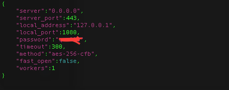
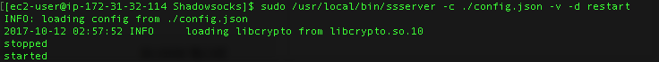
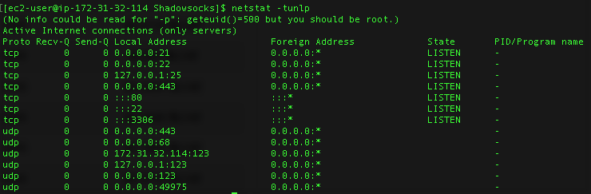
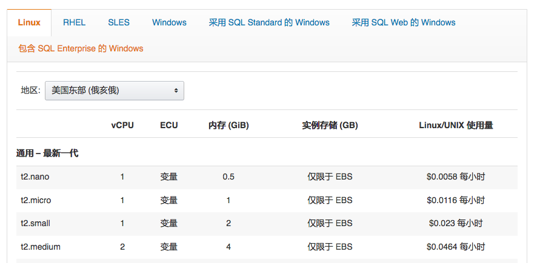
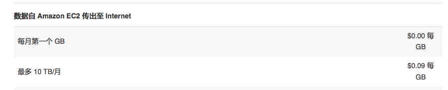

AWS搭建ss服务
Table of Contents
1 aws 上搭建shadowsocks
工作需要, 加上越来越不靠谱第三方VPN服务, 需要搭建一个自己的ss(Shadowsocks)服务器, 以下记录以备忘
首先购买一个amazon的Ec2服务并启动一个实例, 这个 Amazon AWS官网有详细的说明 而且,帐号注册第一年是基本免费的. 免的是ec2实例的运行费用, 如果你不是,存储特别大或传输特别多的时,基本就是完全免费
1.1 远程登录进aws
-安装shadowsocks服务端 sudo pip install shadowsocks (可能提示pip is not command) 可以尝试 sudo /usr/local/bin/pip2.7 install shadowsocks, 或用whereis pip 查找实际地址再加入到profile中
1.2 配置config.json文件
mkdir Shadowsocks cd Shadowssocks touch config.json emacs config.json 内容大致如下:
- 
1.3 开启服务
- ssserver -c ./config.json 或
- sudo /usr/local/bin/ssserver -c ./config.json -d start 同理 restart stop 进行开关控制 ssserver 其它参数选项
- 
1.4 查看是否开启
- netstat -tunlp
- 
以上是技术操作层面的东西
2 成本估算
2.1 ec2的运行成本
- 
2.2 流量成本
- 
2.3 结论
- 选择最低配的ec2实例，每月按750小时算，20~30块左右，第一年免费。流量费用，这个和用多少有点关系，如果只是查个资料，偶尔看个视频等，估计也就0~５块左右。
花费角度上讲，和当前一些第三方的商业“网络加速”服务提供商的价格相比，差不太多甚至更便宜一些。
- 优点：稳定，受政策影响小
- 缺点：有一定技术要求，有一定维护上的时间成本